📅 2026/09/22 (二) - 09/27 (日)｜陽光、白沙灘與蔚藍假期
• 攜帶美金最划算：在台灣先換好美金百元新鈔，到長灘島換披索匯率最佳[cite: 2]。
• 必備 20 披索小鈔：島上搭嘟嘟車、給小費最常用[cite: 2]。沒小鈔時司機與店家常直接說「無法找零」[cite: 2]！
• 機場應急：MPH/KLO 出口可先換 50~100 美金備用交通費[cite: 2]。
• Dmall 韓國超市換錢所：換匯 20 或 50 美金小額面額匯率不打折，物價不高的長灘島很好用[cite: 2]。
• 電壓：220V（插座雙孔扁型相容台灣，手機/筆電充電器可直接插）[cite: 2]。無支援萬國電壓的吹風機、電水壺切勿攜帶[cite: 2]。
• 飲水：水龍頭生水絕對不可飲用，請一律購買瓶裝礦泉水[cite: 2]。
• 時差：菲律賓與台灣無時差[cite: 2]。
• 網路：網卡購買普遍便宜，但島上整體網速偏慢[cite: 2]。
• 沙灘嚴禁飲食：長灘島不能在海灘邊走邊吃，也不能在海灘飲食[cite: 2]。
• 吸菸規範：海灘全面禁菸，抽菸必須至指定吸菸區[cite: 2]。
• 打火機限制：離境長灘島時，1 顆打火機都不能帶上飛機（隨身及託運均禁止）[cite: 2]。
• 碼頭行李小費：碼頭搬行李會強制收取 20 披索小費[cite: 2]。
• eTravel 憑證：入境需要出示 e-travel 的 QR code[cite: 2]。
• 防曬準備：雨傘、墨鏡、海洋友善防曬乳（其實可以在當地買 SPF100+ 效果更好）[cite: 2]。
• 隨身備忘：盥洗用品（除毛巾浴巾）、充電器[cite: 2]。
• 私房亮點：星巴克推薦喝 Peach Jasmine Cold Brew；珍珠很便宜，推薦在沙灘買[cite: 2]！
🛒 推薦採買地點：D-Mall（各種伴手禮紀念品最齊全）、Robinsons / CityMall（明碼標價、冷氣吹、可刷卡）、屈臣氏與星巴克[cite: 2]。
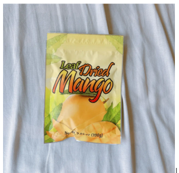
Leaf Dried Mango。吃下來覺得最好吃的芒果乾，在 Very Goods 買的！厚實香甜多汁[cite: 2]。
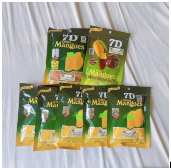
長灘島最知名招牌！原味與黑巧克力淋醬款（Dark Chocolate coated），可先買小包嚐嚐[cite: 2]。
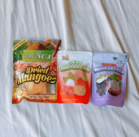
CEBU NO.1 芒果乾，同系列還有紅毛丹 (Rambutan) 與山竹 (Mangosteen) 軟糖，口味特別。
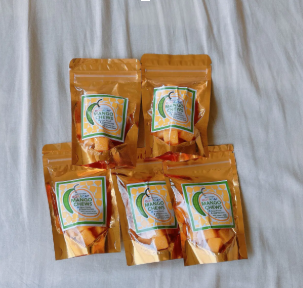
金袋獨立小包裝的芒果軟糖，酸甜嚼勁十足，很適合發給同事與朋友分享[cite: 2]。
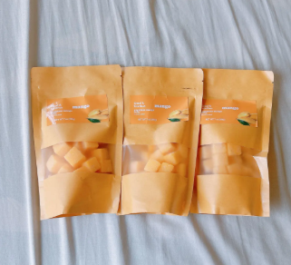
200g 超市也有賣，但這是在當地小店買的！切成方塊狀方便一口吃，口感軟嫩[cite: 2]。
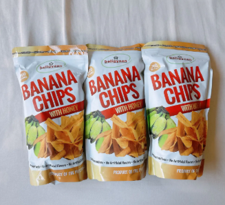
絕不能錯過的酥脆香蕉片！非油炸口感，薄薄蜂蜜裹層酥香清甜，一吃停不下來[cite: 2]。
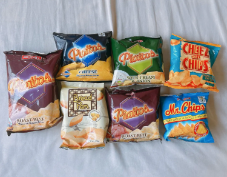
Piattos 起司、酸奶洋蔥、烤牛肉口味都極推，搭配 Bread Pan 吐司餅與 Mr. Chips 玉米片！
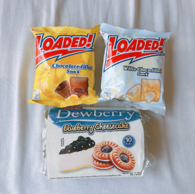
LOADED! 白巧克力與巧克酥，搭配 Dewberry 藍莓乳酪蛋糕夾心餅乾，下午茶配茶點心。
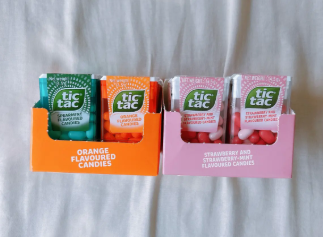
經典糖果！香橙 (Orange)、草莓薄荷等口味，喜歡咬開外殼有夾心口感必收，CP 值超高[cite: 2]。
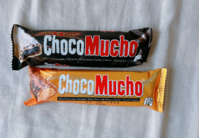
菲律賓國民巧克力！Cookies & Cream 與花生牛奶焦糖威化脆棒，濃郁脆口又便宜。
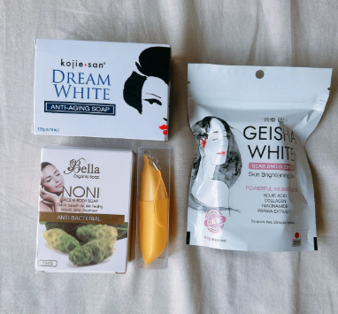
買了 Kojie San Dream White 緊緻皂、GEISHA WHITE 麴酸美白皂與 Bella NONI 抗菌皂，洗感清爽控油！
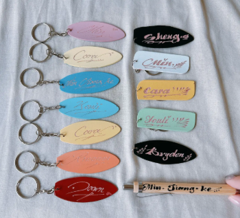
D-Mall 攤位可現場手工雕刻英文名字的衝浪板木質、壓克力彩色吊飾與木質手寫筆，專屬獨特。
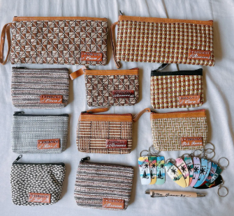
極具南洋海島風情的手工編織皮夾與手拿包，皮標上可刻上個人姓名與 Boracay 字樣，送禮超有誠意。
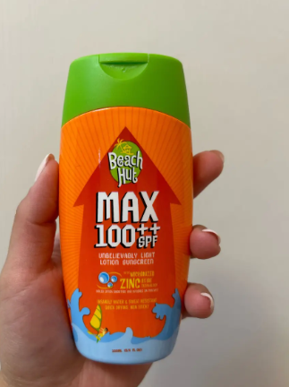
防曬屈臣氏買比較便宜！SPF100++ 超高係數防曬乳，質地輕盈不黏膩且防水抗汗，出海戶外必備[cite: 2]。
長灘島的招牌景點，全長超過 4 公里[cite: 1]。沙子細白、海水清澈，很適合散步、看夕陽[cite: 1]。
白沙灘上很有代表性的地標，海水退潮時可以直接走上去[cite: 1]。雖然人潮不少，但拍照效果還是很美[cite: 1]。
比白沙灘更小巧，也比較清幽[cite: 1]。有 Lambros Point 洞穴，但這邊有當地人會收取小費才讓拍照[cite: 1]。
抵達機場，準備會合接送。
接送前往長灘島飯店 Check-in / 寄放行李。
CityMall 內 Jollibee 或 Mang Inasal[cite: 1]
CityMall 和 The Shoppes at Station B 逛街
Robinsons 超市購物（這家最便宜，可買泡麵、啤酒之類）[cite: 1]
D-Mall 換錢、逛街 Crocs、Havaianas[cite: 1]
晚餐：Andok’s 或 Island Chicken Inasal
酒吧：Mai Tai Bar
按摩：7CUP[cite: 1]
享受早晨悠閒時光。
包船出海浮潛、拍照、夕陽巡航派對。
晚餐：Nameet Bar and Restaurant
按摩：（看情況安排）[cite: 1]
早餐：The Sunny Side Cafe
• (S1) 聖母礁岩（給拍照小哥 50php 拍超美）走路 11 分鐘
• Puka Beach Photo Mark（這裡買珍珠比較便宜）搭車 12 分鐘[cite: 1]
Red Apol Restaurant（走路 2 分鐘）[cite: 1]
搭車 6 分鐘回飯店避開烈日休息[cite: 1]。
搭車 8 分鐘（從 Diniwid Beach Entry 下車走 3-5 分鐘）[cite: 1]
晚餐：Gerry’s Grill
按摩：Ilias Spa
酒吧續攤[cite: 1]
Smooth Cafe 或 Cafe Shine Boracay 咖啡廳[cite: 1]
高空拖曳傘海上飛行冒險。
OneShot Korean Restaurant 或 momo ramen[cite: 1]
D-Mall 商圈選購紀念品與伴手禮[cite: 1]。
S2 晚餐
按摩：The Tides Hotel Boracay[cite: 1]
Villa 內游泳池玩水、放鬆渡假。
S2 享用人氣美味料理。
最後採買補貨伴手禮與手作紀念品。
漫步白沙灘欣賞浪漫日落。
晚餐：Henann Regency Resort
按摩：Upperhouse Spa[cite: 1]
先到 S2 吃午餐[cite: 1]
最後回味在地風味美饌。
搭乘接駁抵達機場辦理登機與託運。
班機起飛返程，經馬尼拉轉機返台。
地址：Sitio Hagdan, Malay, Lalawigan ng Aklan[cite: 1]
營業時間：11:00–22:30[cite: 1]
推薦：菲式烤豬肉串、烤肋排、蒜香甜辣螃蟹[cite: 1]
地址：139-118 Boracay Hwy Central, Malay, Aklan[cite: 1]
均消：約 PHP 500 - 1,000[cite: 1]
推薦：蒜味大蝦/辣味大蝦、豬肉菲式酸湯、蒜頭飯[cite: 1]
地址：Sitio Pinaungon, Babaw, Balabag[cite: 1]
營業時間：每日 08:00 AM – 09:00 PM[cite: 1]
推薦：鹽可頌、雲朵抹茶、冰淇淋可頌、法式火腿起司可頌、特製 Shine 起司蛋糕、冰拿鐵[cite: 1]
地址：Station 1 Beachfront, Balabag[cite: 1]
營業時間：每日 07:00 – 22:00[cite: 1]
推薦：巨大鬆餅（可點半份）、無糖芒果汁、蕈菇義大利麵[cite: 1]
地址：Station 1, Balabag[cite: 1]
營業時間：一至三、五至日 07:00–22:30（週四公休）[cite: 1]
推薦：西班牙拿鐵、氮氣冷萃、麻糬鬆餅、阿法奇朵[cite: 1]
地址：Station 1 Balabag Boracay Island[cite: 1]
營業時間：週一至週日 10:00 AM – 11:30 PM[cite: 1]
推薦：綜合肉鐵板燒配餅皮、酥炸塔可、鐵板豬肋排飯[cite: 1]
地址：Beach front Dmall of Boracay[cite: 1]
營業時間：咖啡廳 07:00~22:00 / 義大利餐廳 10:00~00:00[cite: 1]
主打：好喝咖啡、PIZZA、義大利麵、各種小點[cite: 1]
地址：Beachfront, D'Mall of Boracay[cite: 1]
營業時間：07:00~隔天04:00[cite: 1]
主打：漢堡、抽水煙、雞尾酒、起司球、生啤[cite: 1]
地址：Aklan D’Mall, D’Boracay Balabag[cite: 1]
營業時間：10:00~23:00[cite: 1]
主打：各式燒烤套餐、芒果冰沙、豬肋排、烤魷魚串[cite: 1]
地址：DMall, Boracay (Station 2)[cite: 1]
營業時間：11:00–22:00[cite: 1]
推薦：烤雞多汁又便宜[cite: 1]
地址：D'Mall Boracay[cite: 1]
營業時間：週一~四 09:00-22:00 / 週五~日 09:00-23:00[cite: 1]
推薦：菲式炭烤雞肉、烤雞腿套餐、Pork BBQ、Pork Sisig，白飯可無限續加[cite: 1]
地址：Boracay Hwy Central[cite: 1]
營業時間：11:00~22:00[cite: 1]
推薦：招牌辣椒蟹 / 咖哩蟹、鹹蛋黃蝦、胡椒蝦及炒飯[cite: 1]
地址：Unit E Blk 19, Wet Market Section, D'mall[cite: 1]
營業時間：每日 11:00~20:00[cite: 1]
推薦：牛骨湯、小卷[cite: 1]
位置：S2 區 D'mall 主幹道屈臣氏正對面[cite: 1]
營業時間：每日 10:00 AM - 11:00 PM[cite: 1]
推薦：雞排、鹹酥雞、彩虹冰沙[cite: 1]
地址：2 White Beach Path, Boracay Island[cite: 1]
營業時間：週一至週日 11:00 – 23:00[cite: 1]
推薦：蒜飯、Inihaw na Pusit (烤魷魚)、Sizzling kangkong[cite: 1]
地址：Tulubhan Road, Bolabog (S2 附近)[cite: 1]
營業時間：每天 08:00 – 隔天凌晨 02:00[cite: 1]
推薦：Adobo、Silogs、Beef Pares 及 Pansit sisig[cite: 1]
地址：Bulabog, Balabag, Malay[cite: 1]
營業時間：11:00 一直營業到凌晨 03:00[cite: 1]
推薦：海鮮拉麵、豚骨拉麵、起司豬排[cite: 1]
地址：Station 2 Mainroad (D'Mall 附近)[cite: 1]
營業時間：10:00 AM - 10:30 PM[cite: 1]
推薦：高 CP 值五花肉吃到飽、泡菜豬肉鍋、燉牛肉[cite: 1]
特色：品項豐富，擁有很多燒烤吧，酒水另外付費[cite: 1]
特色：飲料、酒類喝到飽，品項較少但比較精緻[cite: 1]
地址：Station 3, White Beach Path[cite: 1]
營業時間：週一~四、六~日 9:00-22:00 / 週五 9:00-22:30[cite: 1]
推薦：焗烤生蠔、辣炒空心菜、海鮮拼盤與熱帶調酒[cite: 1]
地址：Boracay Sands Hotel, Station 3 Beachfront[cite: 1]
營業時間：每日 07:00 – 20:00[cite: 1]
特色：創始店氣氛較溫馨[cite: 1]
位置：S3 和 D'mall 各有分店[cite: 1]
營業時間：週一至週日 10:00 – 00:00[cite: 1]
推薦：綠咖哩、帕泰（泰式炒麵）、芒果糯米飯[cite: 1]
分店：S1 (至23:00)、S2 (11:00-22:00)、CityMall (至17:00)、Savoy Retail[cite: 1]
推薦：酸奶洋蔥、燒烤、香辣燒烤、起司口味薯條[cite: 1]
推薦：炸雞（必沾 Gravy 肉汁）、Peach Mango Pie 芒果派[cite: 1]
地址：S1 沙灘上 Google 地圖📍[cite: 1]
營業時間：06:00-23:00（半開放式無冷氣）[cite: 1]
推薦：Mango shake、Banana shake、banana mango shake with milk[cite: 1]
位置：靠近聖母岩礁 Willy's Rock（有冷氣，人潮較少）[cite: 1]
地址：D-Mall Balabag #80, 81 Google 地圖📍[cite: 1]
營業時間：每日 09:00 - 00:00[cite: 1]
特色：芒果冰沙排隊名店[cite: 1]
營業時間：週一至週日 09:00 – 22:00[cite: 1]
特色：位在 D'Mall 巷弄內，交通最方便但排隊人最多[cite: 1]
地址：Main Road, Dmall, Balabag Station 2[cite: 1]
營業時間：週日~二 11:00-22:00 / 週三~六 11:00-23:00[cite: 1]
推薦：打拋豬肉飯、沙爹雞肉、黑糖珍珠奶茶[cite: 1]
地址：S1與S2大街旁 Google 地圖📍[cite: 1]
營業時間：06:00-23:00（有冷氣）[cite: 1]
位置：Boracay Sands Hotel 旁，與「Mango Mama」聯名店[cite: 1]
地址：White Beach Path（靠近 Paradise Garden 渡假村前）[cite: 1]
營業時間：10:00 AM - 10:00 PM[cite: 1]
推薦：紫薯芒果冰沙、奧利奧椰子冰沙、芝士奶蓋抹茶[cite: 1]
位置：Station 1, White Beach Path（靠近 Discovery Shores）[cite: 1]
營業時間：16:00 – 01:00[cite: 1]
特色：專業水準調酒（約 400 PHP），傍晚起有駐場 DJ[cite: 1]
位置：Station 1, Boracay Highway Central（靠近聖母礁岩）[cite: 1]
營業時間：06:00 – 02:00[cite: 1]
特色：巨無霸水龍頭調酒、泰式雞肉披薩、水菸；夜晚變身踩沙舞池[cite: 1]
位置：D'Mall Station 2, 潮汐飯店 4 樓頂樓[cite: 1]
營業時間：10:00 – 22:00[cite: 1]
特色：白色日光浴懶骨頭沙發，Happy Hour 買一送一[cite: 1]
位置：Beachfront, D'Mall of Boracay 黃金轉角[cite: 1]
營業時間：07:00 – 04:00[cite: 1]
特色：S2 露天地標夜店，深夜 11 點後主打超嗨電音[cite: 1]
位置：Station 2, White Beach Path（Henann Regency 附近）[cite: 1]
營業時間：週日~四 19:30-02:00 / 週五~六 19:00-03:00[cite: 1]
特色：海灘第一排熱舞夜店，室內舞池直通白沙灘[cite: 1]
位置：Station 2, Balabag（D'Mall 靠沙灘步道旁）[cite: 1]
營業時間：16:00 – 04:00[cite: 1]
特色：超人氣續攤前哨站，抽水菸、喝琴湯尼聽雷鬼音樂[cite: 1]
位置：D'mall, Station 2（靠近內陸沼澤湖方向）[cite: 1]
營業時間：17:00 – 02:00[cite: 1]
特色：當地 San Miguel 生啤酒超便宜（80-120 PHP）[cite: 1]
特色：全島唯一大型室內冷氣夜店，凌晨續戰聖地[cite: 1]
• 腳部按摩：公定價大概 500 披索/hr，這是試試店家按摩功力的最佳方案[cite: 2]。
• 精油按摩：公定價大概 800 披索/hr，最熱門選項[cite: 2]。
• 熱石按摩：公定價大概 2000 披索/2hr，必定要嘗試的體驗，由於費用不便宜建議找有口碑店家[cite: 2]。
• 四手按摩：公定價大概 2000 披索/1.5hr，可遇不可求，由於費用不便宜建議找有口碑的店家[cite: 2]。
• 傳統 Hilot Spa：公定價大概 2500 披索/2hr，少數店家才有的傳統 spa，費用不便宜建議找有口碑店家[cite: 2]。
位置：第一碼頭星巴克附近巷弄內 The District 飯店內[cite: 2]
營業時間：14:00~22:00[cite: 2]
價位：60分鐘台幣600元、90分鐘台幣1000元[cite: 2]
特色：規模不大卻裝潢舒適，按摩技術很不錯又不貴，便宜超值！一定要先預約[cite: 2]。
位置：D'Mall 入口小巷弄內，地點不起眼並不好找[cite: 2]
營業時間：10:00~22:00[cite: 2]
價位：最低全身精油按摩 900-1000 披索 / 熱石 1500 披索[cite: 2]
特色：口碑堆疊人氣飆升，屬中價位但物有所值[cite: 2]。略帶韓風裝潢、清爽舒適，有淋浴區與精油試聞[cite: 2]。
位置：最熱鬧 D'Mall 中 The Tides Hotel (潮汐飯店) 頂樓[cite: 2]
營業時間：10:00~22:00 (最後時間 21:00)[cite: 2]
價位：全身精油按摩 1000 披索、熱石按摩 1500 披索[cite: 2]
特色：地點絕佳鬧中取靜、環境不錯有淋浴設備[cite: 2]。方案選擇多元，KKday 上有販售會比現場便宜一些[cite: 2]。
地址：Tirol Road, Station 2[cite: 1]
營業時間：24 小時營業[cite: 1]
價位：腳底 500 PHP / 精油 800-900 PHP[cite: 1]
位置：S2 區 D'mall 附近（Day 1 安排按摩點）[cite: 1]
地址：D'Mall Alley, Station 2[cite: 1]
營業時間：10:00 – 22:00[cite: 1]
價位：1小時約 450 PHP，2小時約 700 PHP（佛心平價熱石/精油）[cite: 1]
地址：D'Mall, Station 2（King Shrimp 餐廳旁）[cite: 1]
營業時間：10:00 – 22:00[cite: 1]
價位：精油/指壓 2 小時約 1,500 PHP[cite: 1]
地址：Henann Palm Beach Resort 旁, S2 White Beach Path[cite: 1]
營業時間：08:00 – 00:00[cite: 1]
價位：深層組織按摩 1 小時約 550 PHP[cite: 1]
價位：油壓 500 PHP / 小時[cite: 1]
價位：熱石 1500 PHP / 2小時[cite: 1]
地址：Boat Station 3, White Beach Path（Casa Camilla 旁）[cite: 1]
營業時間：09:30~22:00[cite: 1]
價位：腳部按摩 400 PHP 起（KLOOK 買較便宜）[cite: 1]
特色：精油與手法皆可客製化，極具專業水準[cite: 1]
地址：Inside Golden Phoenix Hotel, Station 3[cite: 1]
營業時間：每日 10:00 – 00:00[cite: 1]
價位：油壓 / 腳底按摩 650 PHP / 60分鐘[cite: 1]
地址：Inside Casa Pilar Beach Resort, Station 3[cite: 1]
營業時間：10:00 – 22:00[cite: 1]
價位：全身按摩 1 小時約 1,000 PHP[cite: 1]
說明：島上價格最親民、公定價最便宜的連鎖大型超市，想省荷包一次大量採買日常用品與零嘴必來！
特色：商品種類島上最齊全，生鮮、飲用水、零食庫存最足，價格比沙灘沿線平價非常多。
分店位置：Main Road 大馬路邊及 CityMall 商場一樓各有一間分店[cite: 1]。
休閒亮點：二樓設有匹克球場 (Pickleball) 以及長灘島上唯一的冷氣電影院[cite: 1]。
推薦：桶裝礦泉水、San Miguel 菲律賓生力啤酒、大包裝香蕉脆片、7D 芒果乾、當地泡麵。
說明：觀光客最常路過、人氣最高的經典地標級超市，主打地點核心與交通便利性。
特色：整體定價較高一些、尖峰結帳人潮多，但營業時間長、地點極好，是島上叫車、集合的知名地標。
分店位置：E-Mall 商圈及 D'Mall 商圈正門口各有一間分店[cite: 1]。
亮點：補貨最方便，買現冰飲料、水上活動補給零食、防蚊液免特地繞路。
推薦：冰鎮飲料、隨手包零食小點心、急用盥洗包、海灘防水小配件。
說明：位於 Station B 商場地下一樓，走質感現代化路線的精品超市，逛街體驗島上最佳[cite: 1]。
特色：環境明亮整潔、冷氣極強、動線舒適寬敞不擁擠，商品陳列整齊且全面明碼標價、可刷卡[cite: 1, 2]。
分店位置：位於 S2 往 S3 之間的 The Shoppes at Station B 商場地下一樓 (B1)[cite: 1]。
亮點：進口零食、日韓商品與烘焙品項最齊全，結帳效率高，逛起來像台灣高級連鎖超市。
推薦：各式 San Miguel 調味生啤、進口與本土泡麵、高品質芒果乾、堅果巧克力、伴手禮盒。
說明：長灘島北方第一座大型現代化室內冷氣購物中心，中午避暑吹冷氣與飽餐首選。
特色：挑高明亮、全室內冷氣開放，環境乾淨衛生，設有寬敞舒適的座位用餐區與乾淨洗手間。
美食陣容：一樓擁有大型速食美食街，包含 Jollibee 蜜汁炸雞、Mang Inasal 炭烤雞腿飯、超群 (Chowking) 菲式港點[cite: 1]。
商場配置：館內同時進駐有大型 Savemore 超市、Watsons 屈臣氏，吃喝與日常採買能一次滿足[cite: 1]。
推薦：正中午避暑用餐、吹冷氣放空、大量採買生活補給。
說明：座落於 Station B 的新穎複合式精品商場，動線規劃良好、採買氛圍安靜好逛[cite: 1]。
特色：結合超市、生活雜貨、時尚店舖與休閒餐飲，人潮不像 D-Mall 那麼擁擠，逛起來非常愜意放鬆。
樓層亮點：
• B1 地下一樓：進駐寬敞舒適的 Robinsons 大型超市[cite: 1]。
• 2 樓生活雜貨：設有類似 Miniso 的生活日用品名店 Miutiso，販售超多生活小物、海灘帽子、收納包、墨鏡與美妝雜貨，非常好逛好買[cite: 1]。
推薦：添購遮陽草帽、海灘防水袋、便攜風扇、質感居家小物與伴手禮零食。
說明：島上規模最大、最安心可靠的國際連鎖連鎖藥妝店，價格透明不坑觀光客。
特色：貨源齊全充足、經常配合促銷折扣，購買防曬、洗護品及美妝香皂比沙灘周邊路邊小店便宜許多。
分店位置：CityMall 商場一樓，以及 S2 區 D'Mall 主幹道入口處（正對 7cups）[cite: 1]。
必買推薦：
• Beach Hut MAX SPF100++ 防曬乳：出海戶外必備，抗水防曬力頂級且質地清爽，屈臣氏買最划算！
• 美膚香皂類：Kojie San 麴酸美白皂、Dream White 緊緻抗老皂、木瓜美膚皂，送禮自用兩相宜。
• 健康常備：OFF! 戶外防蚊噴霧、暈船藥、腸胃藥、曬後舒緩蘆薈膠、止痛退燒藥。